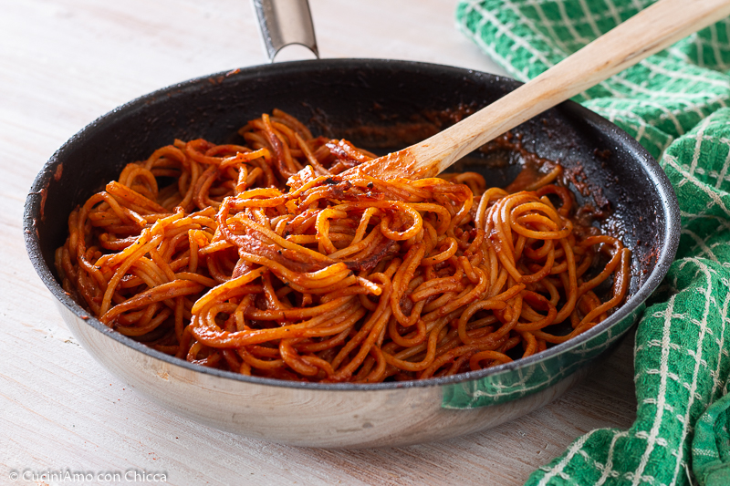

Spaghetti all'assassina

Ingredients
- spaghetti 320gr
- 1 garlic clove
- Extra-virgin olive oil, as needed
- tomato sauce 300g
- Water (hot), as needed
- 1 chili pepper (or powder), as needed
- salt, as needed
Steps
- Start by sautéing the garlic and chili pepper in a drizzle of oil (I used chili powder and added it later with the sauce)
- Add the spaghetti and immediately pour in hot water
- Add the hot tomato passata, remove the garlic, and then pour in a ladleful of sauce
- Adjust the salt to taste, then cook the spaghetti, adding sauce and water as needed, being careful not to let the bottom burn - this is their particularity